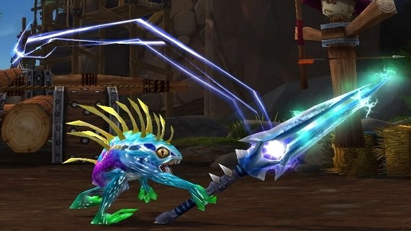

Thunderfury, Blessed Blade of the Windseeker

DID SOMEONE SAY: "THUNDERFURY, BLESSED BLADE OF THE WINDSEEKER?"
Once wielded by Thunderaan, Prince of Air, this is a weapon of boundless elemental fury and would prove to be a formidable force
on the battlefield. Do you have what it takes to brave the most treacherous depths of Blackrock Mountain, confront its prior owner,
and claim this lost power for yourself?
Materials
- Bindings of the Windseeker (Left)
- Bindings of the Windseeker (Right)
- Essence of the Firelord
- 10 x Enchanted Elementium Bar
- 10 x Elementium Ingot
- 100 x Arcanite Bar
- 10 x Fiery Core
- 30 x Elemental Flux
Steps
- Obtain one of the Bindings of the Windseeker from either Baron Geddon or Garr in the Molten Core.
- Travel to Silithus and speak with Highlord Demitrian to begin the quest to reforge the blade.
- Obtain the remaining Bindings of the Windseeker from the Molten Core.
- Defeat the forces of Ragnaros and claim the Essense of the Firelord from his remains.
- Reach 300 blacksmithing or recruit the aid of a friend.
- Obtain enough reagents from the Molten Core and Blackwing Lair in order to craft 10 Enchanted Elementium Bars.
- Gather your forces and return all the ingredients to Demitrian. A revived Thunderaan will confront you, so be prepared!!
- Slay Thunderaan and claim Thunderfury, Blessed Blade of the Windseeker from Demitrian as your reward!